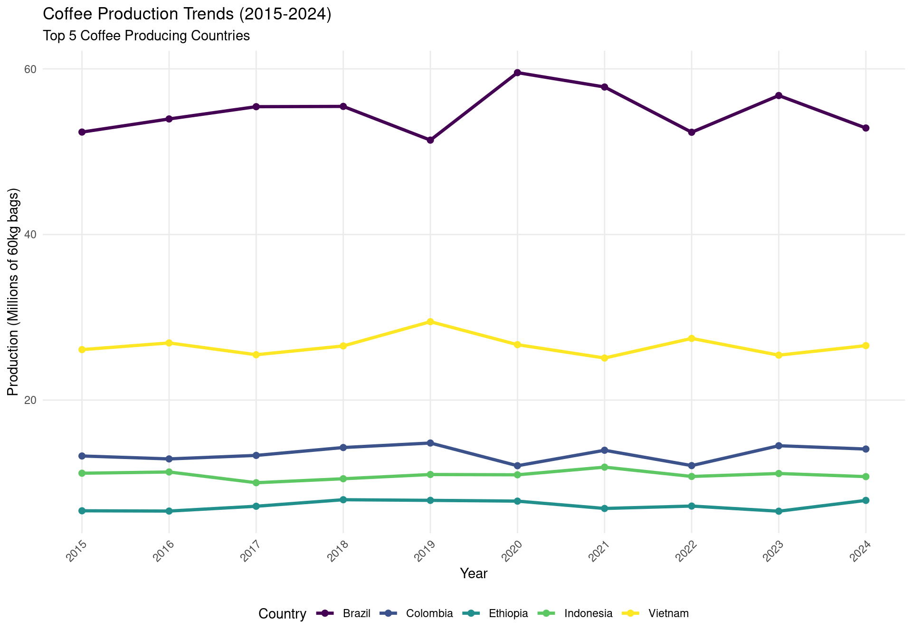
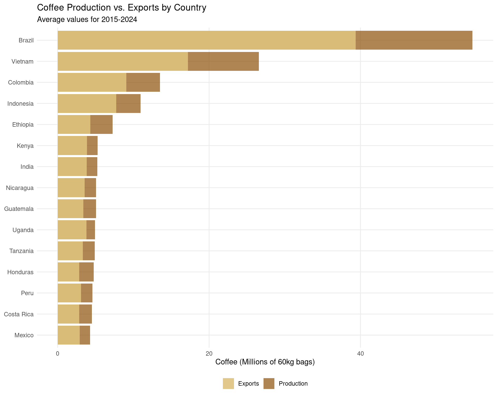
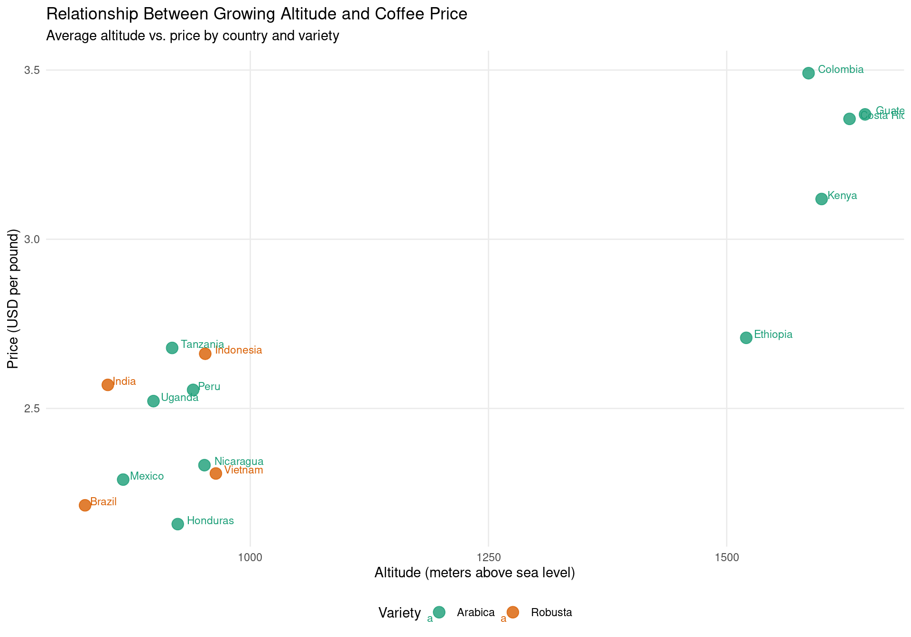
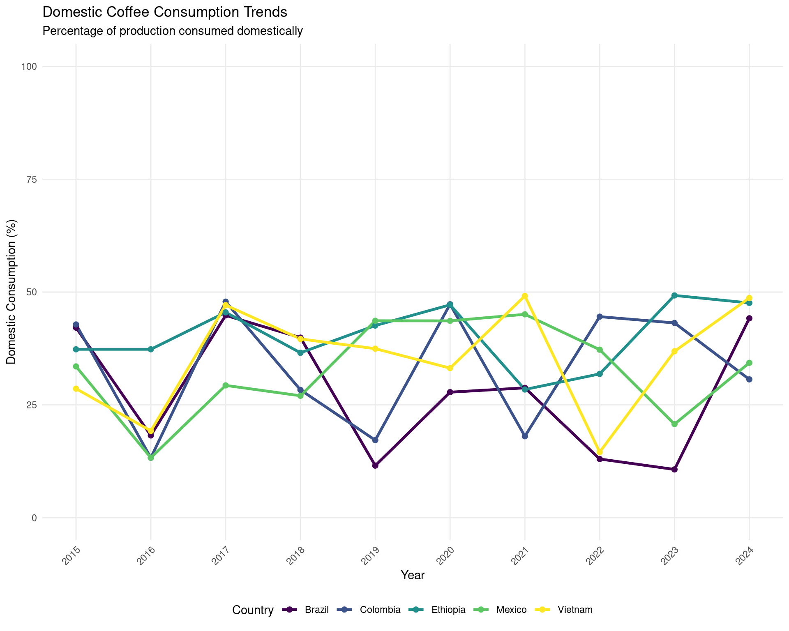

Exploring trends in coffee production, exports, and consumption
Published
March 9, 2025
Introduction
For this week’s Tidy Tuesday, I explored global coffee production data. Coffee is one of the world’s most traded agricultural commodities, with millions of people involved in its production, processing, and distribution. This analysis examines production trends, export patterns, and the relationship between price, variety, and growing conditions.
The Data
Our dataset includes information on coffee production, exports, domestic consumption, prices, and growing conditions across 15 major coffee-producing countries from 2015 to 2024.
Let’s take a look at the first few rows of our dataset:
# Using kable for better table formattinghead(coffee_data) %>%kable() %>%kable_styling(bootstrap_options =c("striped", "hover", "condensed"), full_width =FALSE)
country
year
production
exports
domestic_consumption
price
variety
altitude
Brazil
2015
52368
30310.483
22057.517
1.645784
Robusta
783
Vietnam
2015
26097
18635.728
7461.272
1.729525
Robusta
917
Colombia
2015
13251
7577.217
5673.783
4.361002
Arabica
1202
Indonesia
2015
11169
7603.348
3565.652
2.141132
Robusta
1025
Ethiopia
2015
6633
4157.706
2475.294
1.877499
Arabica
1348
Honduras
2015
5096
2784.810
2311.190
2.287659
Arabica
858
Production vs. Export Analysis
Let’s also look at a summary of production and export data by country:
# Calculate average production and exports by countrycountry_summary <- coffee_data %>%group_by(country) %>%summarize(avg_production =mean(production),avg_exports =mean(exports),export_ratio =mean(exports/production) *100 ) %>%arrange(desc(avg_production))# Display nicely formatted tablecountry_summary %>%mutate(avg_production =round(avg_production, 0),avg_exports =round(avg_exports, 0),export_ratio =round(export_ratio, 1) ) %>%rename(Country = country,"Avg Production"= avg_production,"Avg Exports"= avg_exports,"Export Ratio (%)"= export_ratio ) %>%kable(caption ="Coffee Production and Export Summary by Country") %>%kable_styling(bootstrap_options =c("striped", "hover", "condensed"), full_width =FALSE) %>%row_spec(1:3, background ="#F8F8DC") # Highlight top 3 producers
Coffee Production and Export Summary by Country
Country
Avg Production
Avg Exports
Export Ratio (%)
Brazil
54795
39372
71.9
Vietnam
26571
17204
64.6
Colombia
13525
9071
66.7
Indonesia
10959
7740
70.8
Ethiopia
7266
4325
59.6
Kenya
5276
3876
72.7
India
5237
3818
71.3
Nicaragua
5077
3550
70.8
Guatemala
5075
3383
66.2
Uganda
4936
3803
77.5
Tanzania
4878
3336
67.5
Honduras
4742
2843
61.3
Peru
4581
3065
67.0
Costa Rica
4529
2840
62.8
Mexico
4283
2898
67.2
Global Coffee Production Trends
First, let’s examine how coffee production has changed over the past decade for the top producing countries:
# Get top producers by average productiontop_producers <- coffee_data %>%group_by(country) %>%summarize(avg_production =mean(production)) %>%arrange(desc(avg_production)) %>%head(5) %>%pull(country)# Filter for top producerstop_producers_data <- coffee_data %>%filter(country %in% top_producers)# Create plotggplot(top_producers_data, aes(x = year, y = production/1000, color = country)) +geom_line(linewidth =1.2) +geom_point(size =2) +labs(title ="Coffee Production Trends (2015-2024)",subtitle ="Top 5 Coffee Producing Countries",x ="Year",y ="Production (Millions of 60kg bags)",color ="Country" ) +scale_x_continuous(breaks = years) +theme_minimal() +theme(axis.text.x =element_text(angle =45, hjust =1),legend.position ="bottom",panel.grid.minor =element_blank() ) +scale_color_viridis(discrete =TRUE)

Production vs. Export
Next, let’s analyze the relationship between production and exports for different countries:
# Create bar chart comparing production and exportsggplot(country_summary, aes(x =reorder(country, avg_production))) +geom_bar(aes(y = avg_production/1000, fill ="Production"), stat ="identity", alpha =0.7) +geom_bar(aes(y = avg_exports/1000, fill ="Exports"), stat ="identity", alpha =0.9) +coord_flip() +labs(title ="Coffee Production vs. Exports by Country",subtitle ="Average values for 2015-2024",x =NULL,y ="Coffee (Millions of 60kg bags)",fill =NULL ) +scale_fill_manual(values =c("Production"="#8C510A", "Exports"="#DFC27D")) +theme_minimal() +theme(legend.position ="bottom",panel.grid.minor =element_blank() )

Price vs. Altitude
Let’s explore the relationship between coffee growing altitude and price:
# Calculate average altitude and price by country and varietyaltitude_price <- coffee_data %>%group_by(country, variety) %>%summarize(avg_altitude =mean(altitude),avg_price =mean(price) )# Create scatter plotggplot(altitude_price, aes(x = avg_altitude, y = avg_price, color = variety, label = country)) +geom_point(size =4, alpha =0.8) +geom_text(hjust =-0.2, vjust =0, size =3) +labs(title ="Relationship Between Growing Altitude and Coffee Price",subtitle ="Average altitude vs. price by country and variety",x ="Altitude (meters above sea level)",y ="Price (USD per pound)",color ="Variety" ) +scale_color_manual(values =c("Arabica"="#1B9E77", "Robusta"="#D95F02")) +theme_minimal() +theme(legend.position ="bottom",panel.grid.minor =element_blank() )

Domestic Consumption Trends
Finally, let’s examine domestic consumption trends in major coffee-producing countries:
# Calculate proportion of production consumed domesticallyconsumption_trends <- coffee_data %>%group_by(country, year) %>%summarize(consumption_ratio = domestic_consumption / production *100 )# Focus on interesting countries with varying domestic consumption patternsselected_countries <-c("Brazil", "Ethiopia", "Vietnam", "Colombia", "Mexico")# Filter for selected countriesselected_consumption <- consumption_trends %>%filter(country %in% selected_countries)# Create line plotggplot(selected_consumption, aes(x = year, y = consumption_ratio, color = country)) +geom_line(linewidth =1.2) +geom_point(size =2) +labs(title ="Domestic Coffee Consumption Trends",subtitle ="Percentage of production consumed domestically",x ="Year",y ="Domestic Consumption (%)",color ="Country" ) +scale_x_continuous(breaks = years) +scale_y_continuous(limits =c(0, 100)) +theme_minimal() +theme(axis.text.x =element_text(angle =45, hjust =1),legend.position ="bottom",panel.grid.minor =element_blank() ) +scale_color_viridis(discrete =TRUE)

Key Findings
From our analysis, we can observe several interesting patterns:
Production Dominance: Brazil consistently leads global coffee production by a significant margin, followed by Vietnam. Together, these two countries account for nearly half of global coffee production.
Export Patterns: While some countries like Vietnam export the vast majority of their coffee, others like Ethiopia and Brazil retain a significant proportion for domestic consumption.
Altitude and Price Relationship: There’s a strong positive correlation between growing altitude and coffee price. Countries growing Arabica coffee at high altitudes, like Colombia and Ethiopia, generally command higher prices.
Variety Premium: Arabica coffee consistently fetches higher prices than Robusta, reflecting consumer preferences and the different flavor profiles of these varieties.
Domestic Consumption Trends: Brazil not only leads in production but also has the highest domestic consumption among producing countries, with approximately 30-40% of its production consumed locally.
Conclusions
This analysis highlights the complex dynamics of the global coffee market. Production is concentrated in a few major countries, but various factors including growing conditions, variety, and local consumption patterns create a diverse landscape.
For coffee-producing countries, these findings suggest several potential strategies: - Higher-altitude regions may benefit from focusing on premium Arabica production - Countries with established domestic markets (like Brazil) have more stable demand - Smaller producers might differentiate themselves through specialty varieties or sustainable practices
For further research, it would be valuable to examine: - The impact of climate change on growing regions - Fair trade certification and its effect on prices - The relationship between coffee quality scores and price premiums